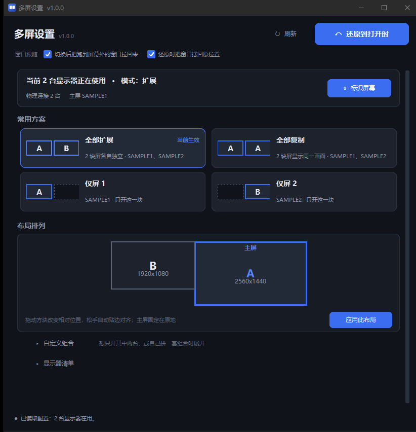

这是什么
Windows 自带的显示设置能做这些事，但每次都藏在三级页面里：想「只留主屏」，得先找到显示设置、再选「仅在 1 上显示」；切完发现窗口全跑到够不到的副屏去了，还得一个个挪回来。
这个工具把常用动作摊平到一屏：打开就读出当前有几块屏在用、什么模式、主屏是哪块，然后按屏数生成方案卡（全部扩展 / 全部复制 / 仅屏 N / 自定义组合），点哪张就切成哪样。切换前自动存一份快照，配置一旦偏离「打开程序那一刻」，「还原」按钮就变成警示色提醒你。
切换显示配置属于普通用户权限，不会弹 UAC。程序不写注册表、不装服务，删掉文件夹就等于卸载。
界面

自上而下四段：状态条说明当前几台屏在用、什么模式、主屏是哪一块，右侧是「标识屏幕」按钮；常用方案按屏数生成卡片，当前生效的那张高亮标出；布局排列按真实分辨率比例画出各屏，可以拖；「自定义组合」与「显示器清单」是低频功能，默认收成一行，第一屏不滚动就能看全画布。
每张方案卡左侧带一个小示意图，读法固定：
| 图示 | 含义 |
|---|---|
| 各屏写不同字母（A、B） | 扩展 —— 每块屏显示不同内容，桌面横向拼接 |
| 各屏写同一个字母 A | 复制 —— 每块屏显示完全相同的内容 |
| 虚线空框 | 不参与、会被关闭的那块屏 |
「标识屏幕」会在每块正在用的屏上盖一个大字母加型号、分辨率，3 秒后自动消失。字母全界面统一——清单、勾选项、方案示意图、屏上的大字母四处一致，屏上亮着 A，就知道清单里的 A 是哪一块。
Windows 没有公开 API 能触发系统显示设置里那个「标识」按钮（编号都拿不到），所以这里是等效做法：自己往每块屏盖一个置顶无边框窗口。
方案与布局
方案切换在后台线程执行，界面不会卡住；切完自动把跑到屏幕外的窗口拉回主屏。底层走 Windows 的 CCD 接口（SetDisplayConfig），比 DisplaySwitch.exe 强的地方在于能指定具体哪几块屏——后者只能做「仅电脑屏 / 复制 / 扩展 / 仅第二屏」四个全局动作。
布局排列等价于系统设置里拖动屏幕块，但多了几条保护：方块按真实分辨率比例画，主屏固定在原点不可拖（GDI 规定位于 (0,0) 的源就是主屏）；松手自动吸附到与相邻屏边缘对齐、且不重叠的位置；一旦重叠，冲突的屏描红边并写明是哪两块，「应用此布局」变灰不可点。
点「应用此布局」后的流程是：先存快照 → 应用 → 回读实际坐标核对。系统若擅自重排，状态栏会如实说「配置已提交，但系统重排了部分屏幕」，不谎报成功。
重叠检测只能放在界面层：系统的 SetDisplayConfig 在校验模式下也不会拒绝重叠布局，而是自己悄悄重排成另一个样子——不拦就会把「被改过的布局」当成「应用成功」。
窗口跟随
换屏最烦的不是屏幕本身，是窗口。顶栏下方两个开关默认都打开，各管一件事：
| 开关 | 作用 |
|---|---|
| 切换后把跑到屏幕外的窗口拉回来 | 切到「仅屏 1」时，原本摆在副屏上的窗口会没入够不到的区域，这个开关把它们平移到最近的屏 |
| 还原时把窗口摆回原位置 | 先恢复显示配置、等 1.5 秒，再把打开程序那一刻各窗口的位置摆回去 |
两个开关都只动位置，不改大小、不激活、不改变窗口层级，最大化和最小化的窗口一律不碰；匹配不上的（窗口已关）跳过。拉回动作本身也能被「还原」撤销——切换前的窗口位置随快照一起存着。
命令行
图形界面给日常用，命令行给脚本用。变更类命令默认只预演，加 --yes 才真正执行。
| 参数 | 作用 |
|---|---|
| （无参数） | 打开图形界面 |
| --status | 查看当前多屏配置 |
| --plans | 列出可选方案，常用的排前面 |
| --apply extend-all | 预演应用某方案（不实际执行） |
| --apply extend-all --yes | 真正应用，执行前自动存快照 |
| --snapshots | 列出已保存的快照 |
| --restore [快照文件] | 还原到最近一份或指定快照 |
| --sizes | 校验 ctypes 结构体大小 |
快照保留最近 20 份。命令行部分只用标准库，customtkinter 仅图形界面需要。
安全与边界
| 设计 | 做法 |
|---|---|
| 改前必存快照 | 所有变更前先落盘当前配置（含各窗口位置） |
| 还原目标明确 | 回到「打开程序那一刻」，不是 Windows 默认状态 |
| 不自动切换 | 界面加载只读配置，必须点卡片或「应用此配置」才动系统 |
| 窗口只移动 | 不改大小、不激活、不弹最小化窗口，不动别的进程 |
| 不谎报成功 | 应用后回读实际状态核对，不一致就如实报告 |
范围上有意做了减法：最初设想过「只有单屏 → 提醒 → 自动诊断修复」这条链路，后来整段移除。原因是它要解决的场景只有「插了第二块屏但没亮」，而方案里的「全部扩展」一点就把它激活了；修复解决不了的（线缆、电源、显示器输入源），软件本来也做不了。
仅支持 Windows 10 / 11（x64）：用的是 Windows 专属的 CCD 与 GDI 接口，没有跨平台计划。另外仓库只发源码，不提供预编译包，想要绿色版需自行打包。
- 只在本机运行，不联网、不收集任何设备信息。
- 不提供任何绕过系统限制或侵入他人的能力，动作都是 Windows 自带接口的封装。
- 显示器型号、序列号等信息只在本机读写，不出现在任何上传链路里。